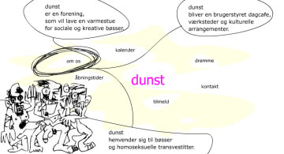

| 24. April 2003 |
"Vi vil bringe Bøssehuset tilbage til forgangne tiders storhed," hedder det fra foreningen Dunst, der flytter permanent ind i det legendariske hus på Christiania. Blandt tilbudene er filmaftener, performance, internetcafe og kreative værksteder.

Bøssehuset på Christiania, der i år kan fejre 30
års fødselsdag, får nye beboere. Dunst hedder de. Foreningen,
der kalder sig selv for "et helt nyt undergrundsmiljø af homo-
og transseksuelle freaks og fisseletter, som på rekordtid har slået
sig fast som landets absolutte homo-avantgarde". Dunst har hidtil
holdt til i et kælderlokale på Vesterbro i København,
men flytter nu ind i huset på Christiania.
"Ønsket er at få bedre rammer for Dunsts brede vifte
af aktiviteter og samtidig bringe Bøssehuset tilbage til forgangne
tiders storhed," skriver foreningen i en pressemeddelelse.
"Vi vil ikke bare invadere Bøssehuset og lave det hele om. Men det bliver alligevel ikke helt det samme. Vi er nye mennesker med nye ideer. Og så har vi også lesbiske med. Det indebærer en bredere køns- og seksualpolitik. Men bare rolig - vores mærkevare er trash," siger Dennis Agerblad, en af hovedkræfterne i Dunst.
"Det normale røvkeder os"
Foreningen har i de seneste år blandt andet tilbudt kreative
værksteder, internetcafe, filmaftener, fælleskøkken
og fester. Dunst pointerer, at de i øvrigt står for alt det
upolerede og bevæger sig helt nede på jorden - måske
under jorden - eller helt deroppe, hvor man aldrig har oplevet fodfæstet.
Eller som Dennis Agerblad siger: "Det normale røvkeder os."
Dunst har dog alligevel ingen intentioner om at fortsætte, hvor
Bøssehuset slap: "For ingen vil nogensinde blive et bedre
bøssehus, end Bøssehuset var i dets velmagtsdage med bøsseteater
og samtids-bøssekultur på højeste plan," siger
Dennis Agerblad. "Men da der hvert år springer nye transede
rendestens-fisseletter ud - eller noget, der til forveksling ligner -
så vil der stadig være brug for et sted som Dunst, hvor finmotorik
med blandt andet øjenvippe-påklistring stadig betragtes som
et fag, der tilhører den gamle mesterlære."
Læs mere om Dunst på www.dunst.dk
Reference:
http://homotropolis.dk/forside/artikel.php?id=2191
Print denne side